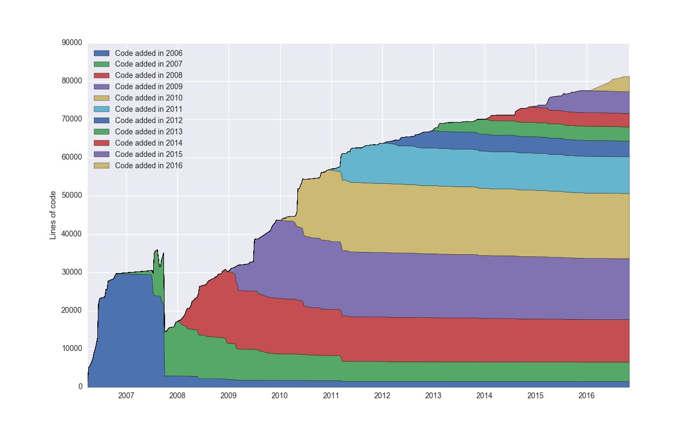

Back to the future: Cljs
Konrad Kühne & Christian Weilbach
Created: 2016-12-14 Wed 18:01
About us
- professional frontend (app and web) and backend (JVM) developers with LivelyCode
- core devs of isomorphic http://replikativ.io/
- regular experience with JavaScript
- introduction to FP with underscore.js and JSON data flow from web services
- functional programming zealots
- pragmatic: Making more money with less work now.
Why?
Language design
- LISP was invented/discovered in 1958
- Brandon Eich's design objective: Java-like script language
- Time to design: 2 weeks !!!!
- \(\Rightarrow\) Some JavaScript core language problems: http://destroyallsoftware.com/talks/wat
- comparison design effort JavaScript vs. Clojure:
2 weeks vs. 2 years - not to speak of all the history in Lisp language design which has since been ported to Clojure (for example MetaObject protocol as the "best" OO approach)
The original JavaScript
- Lisp (Scheme dialect) was intended as the original JavaScript, before Java became so popular
- JS similar to imperative Lisps like Emacs-Lisp
- composition: dynamic extension of small core language, like Scheme
- Dynamic languages (e.g. Python, Ruby, JavaScript) subset of features of Lisp: The hundred year language. Paul Graham.
Language limitations

List Processing
- "Most important idea in Computer Science." Alan Kay
- Remove as much syntax as possible
- interpreter of itself can be expressed on half a page, (chapter 4 of SICP)
- All code is simplest data structure: List (homoiconic)
- adapt language to problem
\(\Rightarrow\) Lisp Macros: Languages as libraries- go-lang as core.async: no callback hell
- prolog as core.logic: relational programming
- statistics as anglican: probabilistic programming
- TypeScript as with core.typed: gradual typing
- OCaml style pattern matching as core.match: terse control flow …
Functional programming
- not just first class functions (closures)
- but pure functions: functions that do not mutate their parameters or the environment, but just return a value
- value semantics: true equality
- Bret Victor about Haskell: "Language for 21st century."
Functional programming in JS
- JavaScript core datastructures (JSON) are mutable
\(\Rightarrow\) no real equality, parameters mutated by functions - FP theoretically possible, but practically impossible on top of imperative programming
- JS libraries do not support FP in general
- current trend with TypeScript / EcmaScript class syntax rather in imperative object-oriented direction like Java
ClojureScript and Clojure
- Clojure is a Lisp dialect for the JVM
- persistent datastructures for FP
- ClojureScript is a port of Clojure to JavaScript
- both are hosted languages, exposing host primitives and abstractions instead of introducing their own: ClojureScript \(\neq\) Clojure
- Clojure brings live coding and strong concurrent programming to the JVM and CLR
- Clojure and ClojureScript can be very nicely integrated, e.g. replikativ
Cljs 💘 JS
- First class interop:
- All primitives are JavaScript primitives
- all ClojureScript functions are normal JavaScript functions
- data structures can be easily converted from and to JSON
- No overhead for large standard library or your code thanks to heavily optimizing Google Closure compiler (used for GMail, …)
- ClojureScript with functional programming strengthens the core value of JavaScript: Interactivity and Live Coding
Relax

Live Coding
- redux, immutable: react state management inspired by Om
- React through material-ui
References
- Source code and presentation: https://github.com/replikativ/chat42
- Boston Clojure - learning resources
- Figwheel Quick Start (look at the FlappyBird Demo ;) )
- Background to Cljs webdev
- Some company web sites using cljs: Capital One, CircleCI, Cisco, Rackspace, Thomson Reuters, …
- Many more use Clojure now: Facebook, Deutsche Bank, Daily Mail, Heroku, Netflix, Oracle, Salesforce, SoundCloud, Walmart Labs, …
- ClojureScript + React Native